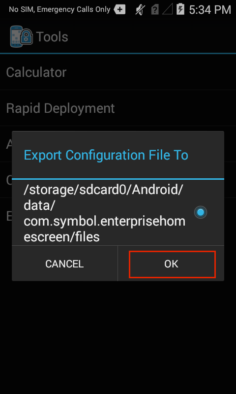
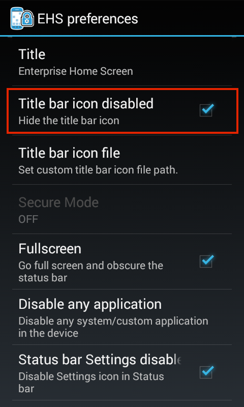
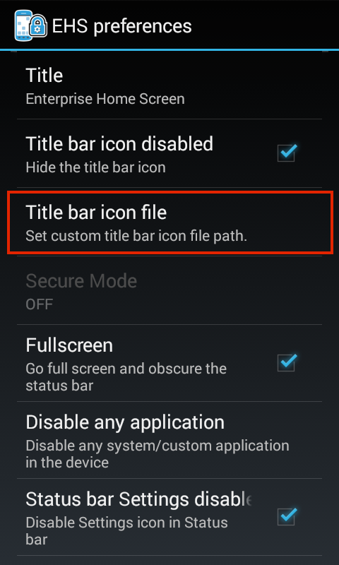
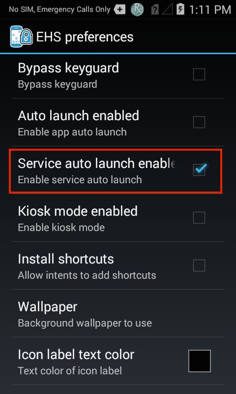
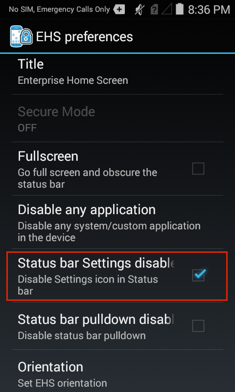
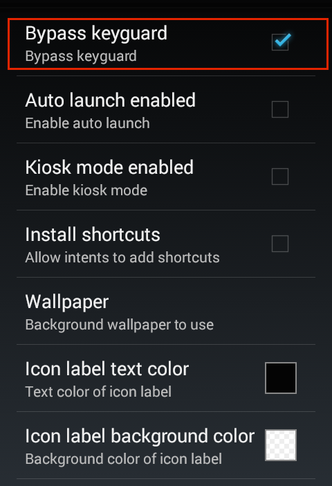
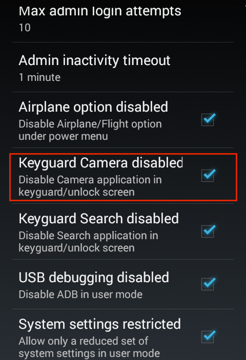
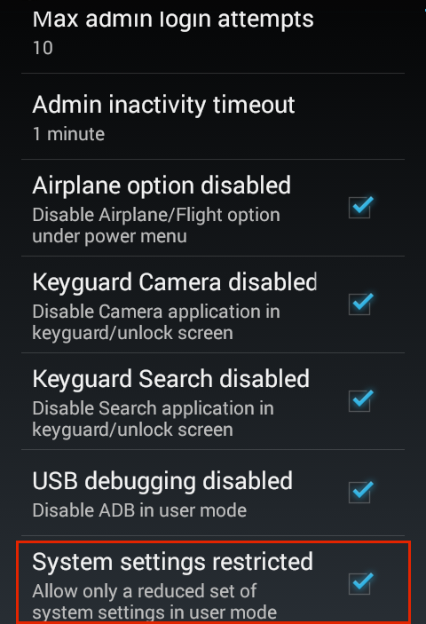
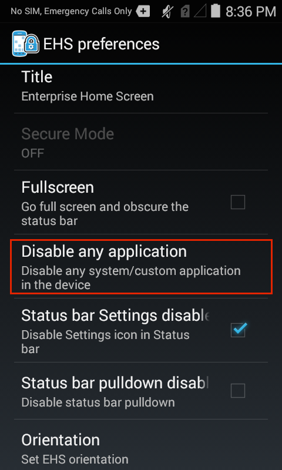
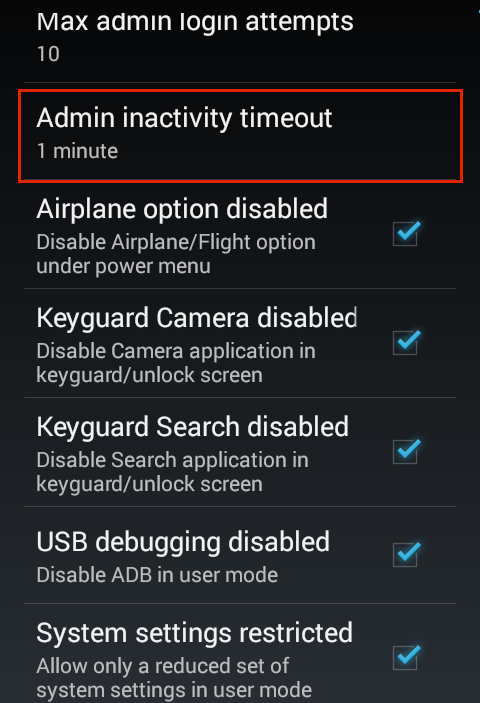

Overview
This section assumes a basic knowledge of Enterprise Home Screen and its capabilities and essential workings. For those not familiar with Zebra's free security tool for its Android devices, please see the About and Setup pages before continuing with this guide. Also see the Special Features Guide for information about Kiosk Mode, Secure Mode and other special EHS features.
The behavior of Enterprise Home Screen is controlled entirely through enterprisehomescreen.xml, an easy-to-read file that can be modified with any text editor. A default version of the file contains many common device security settings plus a few standard apps, and is part of every EHS installation. In many instances, all that's needed to begin using EHS is to add an organization's own applications and to apply its preferred security and display settings.
This guide describes the how to add apps and configure settings using the config file alone (if the setting also can be configured through the GUI, a screenshot is shown). It details the interaction between EHS and the config file, and provides instructions for accessing and customizing the file for a company's specific requirements, and for deploying the settings to device(s). A detailed analysis of the config file follows, with explanations of each of the parameters and examples of how to configure them.
Note: Many of the capabilities of EHS can be accomplished manually on the device, programmatically through EMDK or remotely using StageNow or a third-party mobile device management (MDM) system (if supported by that MDM system). EHS simply puts the capabilities into a single tool.
Working with the Config File
This section describes important interactions between EHS and the enterprisehomescreen.xml config file, and instructions for retrieving, modifying and deploying the file to devices.
Config File Location
- The config file is initially stored in the
/enterprise/usrdirectory on the device. - This directory is invisible to most apps, including Windows Explorer and Android File Transfer (Mac).
- The directory is visible to Android File Browser, which can be used to manage its contents.
- The file is accessible via Android Debug Bridge (ADB) "pull" and "push" commands.
Note: Use caution when exposing File Browser to users; it can be used to manipulate the EHS config file and change security or other settings.
Config File Access
Using ADB
The Android Debug Bridge (ADB) is by far the most efficient way to work through the "pull-edit-push-test" cycle for configuring and testing changes to EHS settings through the enterprisehomescreen.xml file. The process requires a Mac or Windows PC that's connected via USB to a device with EHS installed. For help with software setup, please refer to Setup Guide.
From a computer connected to a target device that has EHS installed:
1. Use ADB to pull the config file from its default location to the local PC:
adb pull /enterprise/usr/enterprisehomescreen.xml
2. Locate, open and edit the config file with a text editor, saving changes. Do NOT change the file name in any way.
3. Push the edited config file to the device:
adb push enterprisehomescreen.xml /enterprise/usr/enterprisehomescreen.xml
Important: Be sure to include the name of the edited source file in the adb push command. Not doing so could cause changes to be ignored.
What happens now?
- Pushing a new version of the config file overwrites the old one.
- If EHS is running, the new settings take effect immediately.
- If EHS is in the background, the new settings take effect the next time EHS comes to the foreground.
Other Notes
- Config file must be named "
enterprisehomescreen.xml" in lower-case letters. - A file with any other spelling or letter case will be ignored.
- If the config file is deleted at any time, EHS will spawn a new config file with default settings.
- If a mixed-case config file of the same name is deployed, it will overwrite a correctly cased file.
- An incorrectly cased config file will be treated as missing or cause unpredictable results.
- Once configured, a config file is suitable for mass-deployment using an MDM with or without the EHS app.
Exporting the Config File
For device troubleshooting and certain other scenarios, it is sometimes useful to make the config file (enterprisehomescreen.xml) visible or to look inside the file and check its settings. The file can be made visible from Admin Mode by exporting it to a visible area of the file system. Alternatively, the config file can be viewed, copied, moved and shared via email or other means using the Android File Browser.
Note: An exported file might remain invisible to the PC until the device is rebooted.
1. In Admin Mode on the device, select Export Configuration File from the Tools menu:

2. Tap OK to confirm the action:

3. Note the location in the confirmation message:

4. Drag the config file (arrow) to a PC for editing using Windows Explorer, Android File Transfer (shown) or a similar means:

Note: An exported file might remain invisible to the PC until the device is rebooted.
Using File Browser
The Android File Browser offers a fast way to get a quick view inside the config file on a device. It also permits the file to be copied, moved or shared via email, Bluetooth or any means enabled on the device.
To look inside the config file on a device:
1. In File Browser, navigate to the /enterprise/usr directory:

2. Long-press the enterprisehomescreen.xml file to display the File Operations menu:

3. Select "Open as.." to select a viewer and hit Launch:

It may be necessary to also tap "txt" to specify the extension type.
3. The config file will open in the Android HTML Viewer:

Default Config File
This section explains the enterprisehomescreen.xml config file, which controls all aspects of EHS behavior. The default version is shown below, followed by an explanation of the file's XML tags and the configuration options for each.
The EHS config file is broken into five sections:
- Kiosk - Specifies a single application to run when the device is in Kiosk mode.
- Applications - The apps to be displayed when the device is in User Mode.
- Tools - The apps to be listed and launched from the User and Admin tools menus.
- Passwords - Stores the encrypted password for logging into Admin Mode.
- Preferences - Controls which features and settings the device will display.
Default enterprisehomescreen.xml file:
<?xml version="1.0" encoding="utf-8"?>
<kiosk>
<application label="Calculator" package="com.android.calculator2" activity=""/>
</kiosk>
<config>
<applications>
<application label="Calculator" package="com.android.calculator2" activity="com.android.calculator2.Calculator"/>
<application label="DWDemo" package="com.symbol.datawedge" activity="com.symbol.datawedge.DWDemoActivity"/>
</applications>
<tools>
<application label="Calculator" package="com.android.calculator2" activity=""/>
</tools>
<passwords>
<admin></admin>
</passwords>
<preferences>
<title>Enterprise Home Screen</title>
<icon_label_background_color>#00FFFFFF</icon_label_background_color>
<icon_label_text_color>#FFFFFFFF</icon_label_text_color>
<orientation></orientation>
<bypass_keyguard>1</bypass_keyguard>
<auto_launch_enable>0</auto_launch_enable>
<wallpaper></wallpaper>
<kiosk_mode_enabled>0</kiosk_mode_enabled>
<disable_status_bar_settings_icon>1</disable_status_bar_settings_icon>
<disable_statusbar_pulldown>0</disable_statusbar_pulldown>
<install_shortcuts>0</install_shortcuts>
<exit_instead_of_reboot>0</exit_instead_of_reboot>
<airplane_option_disabled>1</airplane_option_disabled>
<keyguard_camera_disabled>1</keyguard_camera_disabled>
<keyguard_search_disabled>1</keyguard_search_disabled>
<usb_debugging_disabled>1</usb_debugging_disabled>
<system_settings_restricted>1</system_settings_restricted>
</preferences>
</config>
Config Tags
This section describes all tags in the enterprisehomescreen.xml file and their possible values. They're shown below in the same order they appear in the default file, and are followed by optional tags. Tags can appear in any order, but must be contained within the <config> </config> tag set.
Kiosk
Specifies the app to run when the device is in Kiosk Mode, an optional mode under which a single app fills the screen and the BACK and HOME keys cannot be used to exit it. Kiosk Mode is activated using the <kiosk_mode_enabled> tag in the <Preferences> section.

Possible values:
- Label: string
- Package: app package name
- Activity (optional): name of the activity to be invoked when the app starts
Example
<kiosk>
<application label="Calculator" package="com.android.calculator2" activity=""/>
</kiosk>
Note: When starting up in Kiosk Mode on a device running KitKat, a "please wait" prompt remains displayed. Press the HOME key to launch the Kiosk-Mode app and resume normal behavior.
Applications
Specifies the applications and/or browser links to be displayed to users while EHS is in User Mode. An optional activity parameter permits an app activity to be invoked when the app starts up. Some apps will not launch unless the app package and an activity are specified.
When specifying links, the package and activity parameters can be used to launch the URL with a specific app, such as Mozilla Mobile browser. If no activity is specified, EHS will open the link using the default browser.
Note: Package names may vary from one Android version to another.
Application Example
Possible values (apps):
- Label: string
- Package: app package name
- * (asterisk): used as a wildcard to specify multiple packages with the same prefix
- Exclude: used with wildcard to omit one or more apps from a wildcard set
- Activity (optional): name of an activity to be invoked when an app starts
Sample XML using wildcard to select several apps:
<applications>
//The following lines:
<application label="Packaging" package="com.mobility.packaging" activity=""/>
<application label="Online" package="com.mobility.online" activity=""/>
<application label="Remote" package="com.mobility.remote" activity=""/>
<application label="Inventory" package="com.mobility.inventory" activity=""/>
<application label="Orders" package="com.mobility.orders" activity=""/>
//...could be replaced with this single line using the wildcard character:
<application package="com.mobility.*"/>
//...adding a label to line above applies the label to all apps in the wildcard set:
<application label="RetailApps" package="com.mobility.*"/>
//To exclude one or more apps from the wildcard set:
<application package="com.mobility.*" exclude=”com.mobility.inventory”/>
//The line above removes the "inventory" app. The line below removes both the "inventory" and "online" apps.
<application package="com.mobility.*" exclude=”com.mobility.inventory; com.mobility.online”/>
</applications>
Using wildcard to display all Android apps with "c" as their first letter:
<applications>
<application label="" package="com.android.c*"/>
</applications>
Display all Android apps starting with the letter "c" except Calculator:
<applications>
<application label="" package="com.android.c*" exclude="com.android.Calculator2"/>
</applications>
Display all Android apps starting with the letter "c" except Contacts and Camera:
<applications>
<application label="" package="com.android.c*" exclude="com.android.camera2;com.android.contacts"/>
</applications>
Wildcard rules:
Individual apps and wildcard sets will appear in the User Mode Launcher in the same order as they are listed in the <applications> node.
Apps within each wildcard set will be listed alphabetically by label relative to other apps in that set.
Wildcard search is designed to work with packages that comply with the "<any_name>.<any_name>*" format.
If bundle and icon attributes are used, the same specified attributes apply to all wildcard-selected apps.
Wildcard search works only with User Mode apps; it is not supported for apps specified for the Tools Menu, Auto Launch, or Kiosk Mode.
Apps selected by wildcard cannot be removed using the long-press feature in Admin Mode.
Apps excluded from a wildcard search cannot be added using the long-press feature in Admin Mode.
The exclude attribute does not support the wildcard character; apps must be excluded one at a time.
Apps individually specified in the <applications> node and included in a wildcard search cannot be excluded using an "exclude" attribute or tag.
If the label is undefined in XML, labels of wildcard-selected apps will be applied to icons as they appear in the Android manifest (if undefined in the Manifest, app will appear with a blank label).
Labels longer than 18 characters will be truncated at the 18th character and appended with an ellipsis (...).
The label specified in a wildcard search will apply to all apps identified by the search.
The wildcard character may appear only once per line and only at the end of the line.
The following wildcard searches have been blocked by EHS as a security measure, avoiding the accidental inclusion of all standard Android apps:
- com.android.*
- com.android*
- com.androi*
- com.andro*
- com.andr*
- com.and*
- com.an*
- com.a*
- com.*
Wildcard searches can include "com.androidX" where X=any character except dot (.).
The
enterprisehomescreen.logfile will store error messages resulting from invalid wildcard usare.The EHS app and EHS installer always are excluded from any filtered app list.
URL Example
Possible values (URLs)
- Label: string
- Package: URL (http://, https:// or file://*.html)
Sample XML (for web link)
<applications>
...
<link label="Mozilla Mobile" url="http://www.mozilla.org/en-US/mobile/" package="org.mozilla.firefox" activity="org.mozilla.firefox.App" />
...
</applications>
In the example above, the package and activity attributes are used to launch the URL in the Mozilla Mobile browser. If the specified app (as defined in the package and activity parameters) is not present on the device, the URL will not be displayed. If no activity is specified, EHS will launch the link using the default browser.
Link Removal
To remove a web link from the User Mode screen:
- Delete the entire tag (which begins with "<link label=" and ends with "/>" as shown above) from the <applications> node of the
enterprisehomescreen.xmlfile. - Redeploy the modified
enterprisehomescreen.xmlfile to the device.
Tools
Specifies the apps to be listed in the Tools menu of Admin and User Modes. Note: Package names may vary from one Android version to another.
Possible values:
- Label: string
- Package: app package name
- Activity (optional): name of the activity to be invoked when the app starts
Example
<tools>
...
<application label="Calculator" package="com.android.calculator2" activity=""/>
...
</tools>
Passwords
Stores the encrypted password for logging into Admin Mode (blank by default). Do not populate this tag manually in the config file or edit it in any way. The administrator password will be stored here programmatically by EHS after being entered or changed through the Tools menu in EHS Admin Mode. EHS uses this tag to store the password as a 256-bit AES-encrypted hash. Once a password is created and stored in the config file, it can be mass-deployed along with all other settings.
 The admin password must be entered and changed using the Admin Tools menu in the EHS GUI.
The admin password must be entered and changed using the Admin Tools menu in the EHS GUI.
Possible values:
- (EHS USE ONLY; DO NOT ADD TO OR EDIT THE CONTENTS OF THIS TAG)
Example
<passwords>
<admin></admin>
</passwords>
App Icon Size
Permits the size of application icons to be set to Small, Medium, Large, Extra Large and Extra Extra Large . Icon size can be controlled through the enterprisehomescreen.xml file or through the device UI while in Admin or User Modes.
To change the icon size through the UI:
In Admin or User Mode, tap the menu icon and select Icon settings:
 Icon size is accessible from Admin or User Modes and will apply to both.
Icon size is accessible from Admin or User Modes and will apply to both.
Tap on the desired icon size, then tap OK. Selected size is immediately applied.
 Medium (shown) is the default icon size.
Medium (shown) is the default icon size.
 App icons can be displayed in five sizes; changes apply to both Admin and User Modes.
App icons can be displayed in five sizes; changes apply to both Admin and User Modes.
To set icon size through the enterprisehomescreen.xml file:
Possible values:
- S = Small icons
- M = Medium-sized icons
- L = Large icons
- XL = Extra large icons
- XXL = Extra extra large icons
Example
<user_options>
<icon_settings>
<app_icon_size>XL</app_icon_size>
</icon_settings>
<user_options>
Preferences
Control various aspects of EHS behavior, security and display settings corresponding to options configured in the EHS Preferences UI panel. Tags of individual preferences can appear in any order, but must be contained within the <preferences> </preferences> node.
Title
Specifies the title bar text for the EHS app. The default title "Enterprise Home Screen" can be changed to any string of characters.

Possible values:
- character string
Example
<title>MetaCorp Home Screen</title>
Title Bar Icon Disabled
Controls whether an icon will be displayed in the Title Bar. A value of 0 (false) will allow EHS to display a custom icon.

Possible values:
- 1 (disabled by default)
- 0
Example
<preferences>
...
<title_bar_icon>
<title_bar_icon_disabled>0</title_bar_icon_disabled>
<title_bar_icon_file>/storage/sdcard0/Android/data/com.symbol.enterprisehomescreen/files/title.jpg</title_bar_icon_file >
</title_bar_icon >
...
Title Bar Icon File
Allows an image to be specified for display in the EHS Title Bar. Supports .bmp, .jpg, and .png image formats of medium resolution (varies by device; some hi-res images might not be displayed). Image must be stored locally on the device and specified in the enterprisehomescreen.xml file or in the UI using the full path. Images will be scaled (up or down) using the aspect ratio of the image to fill the available space (which varies by device). Default EHS icon (shown below) will be displayed if tag is missing or left blank, or if the specified icon is missing or invalid.

Possible values:
- fully qualified local (on-device) path to a .bmp, .jpg or .png file
Example
<title_bar_icon>
<title_bar_icon_disabled>0</title_bar_icon_disabled>
<title_bar_icon_file>/storage/sdcard0/Android/data/com.symbol.enterprisehomescreen/files/title.jpg</title_bar_icon_file >
</title_bar_icon >
Icon Label Background
Specifies the background color of the icon label text of applications displayed in User Mode. Default background is #00FFFFFF, which is transparent with an opacity value of 00 (from a range of 00 to FF). Get help picking HTML color codes.

Code Key:
- AA specifies the opacity
- RR specifies the level of RED
- GG specifies the level of GREEN
- BB specifies the level of BLUE
Possible values:
- HTML hexadecimal color code values with or without opacity prefix (#RRGGBB or #AARRGGBB)
- Color names: red, blue, green, black, white, gray, cyan, magenta, yellow, lightgray and darkgray.
Examples
<icon_label_background_color>#00FFFFFF</icon_label_background_color>
<icon_label_background_color>#75A319</icon_label_background_color>
<icon_label_background_color>#80EF671B</icon_label_background_color>
<icon_label_background_color>magenta</icon_label_background_color>
Icon Label Text Color
Specifies the color of the icon label text of applications displayed in User Mode. The EHS default icon text color is #FFFFFFFF, that is white with an opacity value of FF (from a range of 00 to FF). Get help picking HTML color codes.

Code Key:
- AA specifies the opacity
- RR specifies the level of RED
- GG specifies the level of GREEN
- BB specifies the level of BLUE
Possible values:
- HTML hexadecimal color code values with or without opacity prefix (#RRGGBB or #AARRGGBB)
- Color names: red, blue, green, black, white, gray, cyan, magenta, yellow, lightgray and darkgray.
Examples
<icon_label_text_color>#FFFFFFFF</icon_label_text_color>
<icon_label_text_color>#75A319</icon_label_text_color>
<icon_label_text_color>#80EF671B</icon_label_text_color>
<icon_label_text_color>magenta</icon_label_text_color>
Orientation
Allows the screen orientation to be fixed in landscape or portrait mode. Omitting or leaving this setting blank (default) allows Android system settings to control screen orientation.
On Android L devices: screen orientation can be changed through the Quick Settings panel only when EHS is set to accept the System orientation setting (the EHS default). If an EHS administrator sets the orientation to landscape or portrait mode, the device user will no longer be able to change the orientation setting.

Possible values:
- landscape
- portrait
- <blank> (accepts System setting; EHS default)
Example
<orientation></orientation>
Auto Launch Enable (apps)
Enables one or more apps to be automatically launched after EHS starts up. Works with optional <auto_launch> section. When enabled, apps specified in the <auto_launch> section are launched after a specified delay. BACK and HOME keys can be used to exit the app. See the Optional Feature Tags section for more information. Disabled by default. See also: Kiosk Mode.

Possible values:
- 1
- 0 (default)
Example
<service_auto_launch_enable>0</service_auto_launch_enable>
Service Auto Launch Enable
Enables one or more services to be automatically launched after EHS starts up. Works with optional <service_auto_launch> section. When enabled, apps specified in the <service_auto_launch> section are launched after a delay, if specified. The Service Auto-Launch feature can be enabled/disabled in the enterprisehomescreen.xml file or Admin-Mode UI; Services must be specified in the config file. See the Optional Feature Tags section for details. Disabled by default.

Possible values:
- 1
- 0 (default)
Example
<service_auto_launch_enable>1</service_auto_launch_enable>
Wallpaper
Allows a background image to be specified for display in User Mode. If left unspecified, the system's default image will be displayed. Supports .PNG format files in the /enterprise/usr directory only. Resolution support varies by device. If a selected image fails to display, Zebra recommends scaling down the resolution or selecting a different image.

Possible values:
- fully qualified local (on-device) path to file
Example
<wallpaper>/enterprise/usr/mybackground.png</wallpaper>
Fullscreen
EHS can be made to run in full-screen mode by setting the value of this tag to 1. Default is 0. Applies only to EHS; apps launched from within EHS will behave as individually designed. Will not prevent access to the Android Status/Notification Bar on some devices. See Disable Status Bar Settings to prevent user access to this feature in EHS.

Possible values:
- 1 (sets EHS to run in full screen mode)
- 0 (default)
Example
<preferences>
<fullscreen>1</fullscreen>
</preferences>
Kiosk Mode Enabled
Causes the app specified in the <kiosk> section to be launched in full screen mode after EHS start-up and prevents use of BACK and HOME keys to exit the app. Disabled by default. See also: Auto-Launch. On Android L devices: Kiosk Mode should not be used with Screen Pinning, a feature in Android L that provides similar functionality.
Once enabled, Kiosk Mode can be disabled by pushing a new config file with its tag set to 0 if USB Debugging is enabled. Otherwise a factory reset is required.
Possible values:
- 1
- 0 (default)
Example
<kiosk_mode_enabled>0</kiosk_mode_enabled>
Note: When starting up in Kiosk Mode on a device running KitKat, a "please wait" prompt remains displayed. Press the HOME key to launch the Kiosk-Mode app and resume normal behavior.
Disable Status Bar Settings
Controls whether the Settings icon is displayed in the Android Status Bar, and therefore whether the Settings panel is accessible by users. Not supported on all devices. A setting of 0 in this tag will enable the Status Bar Settings icon.
On Android L devices: A new feature in UI Manager allows the Status Bar Settings Icon (which UI Manager calls the Notification Quick Settings Icons) to be controlled through EMDK, StageNow or a third-party MDM system. This will override any EHS setting for controlling the Status Bar Settings icon. Applies only to devices with MX 6.0 and higher, which is for Android Lollipop and later; any prior device limitations remain.

Note: Changes to this setting will cause an automatic device reboot, a requirement for changes to take effect.
Possible values:
- 1 (default)
- 0
Example
<disable_status_bar_settings_icon>1</disable_status_bar_settings_icon>
Disable Status Bar Pull-down
Controls whether the Android Status Bar can be pulled down to reveal controls and notifications. The Status Bar Pull-down is enabled by default. If this tag is omitted, contains a value of 0 or is left blank, the Status Bar Pull-down will be enabled. To disable, enter a value of 1.
On Android L devices: A new feature in UI Manager allows the Status Bar Pull-down (which UI Manager calls the Notification Pulldown) to be controlled through EMDK, StageNow or a third-party mobile device management (MDM) systems. This will override any EHS setting for controlling the Status Bar. Applies only to devices with MX 6.0 and higher, which is for Android Lollipop and later.

Possible values:
- 1
- 0 (default)
Example
<disable_statusbar_pulldown>0</disable_statusbar_pulldown>
Install Shortcuts
Controls whether shortcuts may be added to local or remote apps through Android Intents. Disabled by default.

Possible values:
- 1
- 0 (default)
Example
<install_shortcuts>0</install_shortcuts>
Exit Instead of Reboot
Controls whether EHS will trigger an automatic device reboot when a setting that requires a reboot is changed. Permits Mobile Device Management (MDM) systems to maintain device control after making such changes. Note: The setting in this tag will be overridden if the <reboot_on_install_enabled> tag has a value of 1.
Possible values:
- 1
- 0 (default)
Example
<exit_instead_of_reboot>0</exit_instead_of_reboot>
Reboot on Install Enabled
Controls whether the device will automatically reboot when EHS is launched for the first time after a successful installation, a requirement to activate EHS. Permits Mobile Device Management (MDM) systems to maintain device control following installation. Automatic device reboot is disabled by default. Note: When enabled, this tag will override any setting of the <exit_instead_of_reboot> tag.
Possible values:
- 1
- 0 (default, do not reboot)
Example
<preferences>
<reboot_on_install_enabled>0</reboot_on_install_enabled >
</preferences>
Airplane Option Disabled
Controls whether the device can be put into "airplane mode" from the Power menu or Quick Settings bar. Depending on the device, airplane mode can disable Bluetooth, cellular, Wi-Fi and/or other wireless radios and features. EHS blocks airplane mode by default or if this tag is missing or left unspecified. Enter a value of 0 to permit the device to enter airplane mode. (Access to airplane mode from the Power menu is not available on some MC18, MC40 and MC92 devices running Android 4.4 KitKat. If this feature is greyed out, it might be possible to disable airplane mode on the device using PowerKeyMgr through Zebra EMDK or StageNow tools.

Possible values:
- 1 (default)
- 0
Example
<airplane_option_disabled>1</airplane_option_disabled>
Bypass Keyguard
Controls whether the Keyguard screen (also known as the "Lock Screen") is displayed when the device is powered up. Keyguard is bypassed (not displayed) by default. A setting of 0 in this tag will enable the Keyguard.
Notes
On devices running Android L, the Bypass Keyguard feature fails to unlock the screen after rebooting the device.
On devices that employ MX Multi-user features, a setting of 1 for this tag will prevent the multi-user login screen from being displayed**. Please see important Security Notes involving interactions between EHS and MX Multi-user features.
 The Android Keyguard (also known as the Lock Screen).
The Android Keyguard (also known as the Lock Screen).

Possible values:
- 1 (default, Keyguard not displayed)
- 0
Example
<bypass_keyguard>1</bypass_keyguard>
Keyguard Camera Disabled
Controls whether the device camera will be accessible from the Keyguard screen (also known as the "Lock Screen") when the screen lock is set to "Swipe" mode. Camera access from the Keyguard screen is disabled if this tag has a value of 1 (default) or is left unspecified.
The Keyguard camera is disabled only if all of the following conditions are true:
- The camera app is enabled on the device
- The Keyguard screen is in "Swipe" mode
- The camera icon is visible on the Keyguard screen
- The Keyguard has not been bypassed using the <bypass_keyguard> tag
Unless all four of the above conditions are true, the value in this tag is ignored.
Notes:
- If no camera shortcut exists on the device lock screen, use of this tag is not required.
- Disabling access to the camera app from the lock screen also disables it from the User-Mode screen on some devices, even if the camera is explicitly allowed in User Mode. This occurs if the device is rebooted from the lock screen. There are two options for working around this. See User-Mode Camera Usage section below.
To prevent use of the camera, Zebra recommends using this tag and removing the camera app from the User Mode screen.

Possible values:
- 1 (default)
- 0
Example
<keyguard_camera_disabled>1</keyguard_camera_disabled>
User-Mode Camera Usage
On some devices, disabling access to the camera app from the lock screen also disables it from the User-Mode screen, even if camera usage is permitted on the device. This occurs if the device is rebooted from the lock screen; there are two options for preventing it.
Option 1: Allow access to camera app from lock screen
If users are permitted to access the camera app from User Mode, some organizations also might permit access directly from the lock screen without having to unlock the device. For such cases, modify the enterprisehomescreen.xml file as below.
To allow access to camera app from lock screen:
// Allow camera access:
<keyguard_camera_disabled>0</keyguard_camera_disabled>
// Display lock screen:
<bypass_keyguard>1</bypass_keyguard>
Option 2: Add camera app to 'enabled' list
To permit access to the camera app only after the device has been unlocked, set the <keyguard_camera_disabled> value to "1" and add the package name of the camera app to the (optional) <apps_enabled> list in the enterprisehomescreen.xml file as below. If no such tag exists in the file for this optional parameter, see Enable/Disable Apps for help adding it.
To allow access to camera app only after device is unlocked:
<keyguard_camera_disabled>1</keyguard_camera_disabled>
<bypass_keyguard>1</bypass_keyguard>
...
<apps_enabled>
...
<application package="camera.app.package.name"/> // i.e. "com.android.camera2"
...
</apps_enabled>
Note: The package name of the camera app can vary by device, Android version or other factors.
Keyguard Search Disabled
Controls whether the Search app will be accessible from the Keyguard screen (also known as the "Lock Screen") when the screen lock is set to "Swipe" mode. Search access from the Keyguard screen is disabled if this tag has a value of 1 (default) or is left unspecified.
Applies only if all of the following conditions are true:
- The search app is enabled on the device
- The Keyguard screen is in "Swipe" mode
- The search icon is visible on the Keyguard screen
- The Keyguard has not been bypassed using the <bypass_keyguard> tag
Unless all four of the above conditions are true, the value in this tag is ignored. Note: If no search-app shortcut exists on the device lock screen, use of this tag is not required.
To prevent use of search, Zebra recommends using this tag and removing the search app from the User Mode screen.

Possible values:
- 1 (default)
- 0
Example
<keyguard_search_disabled>1</keyguard_search_disabled>
USB Debugging Disabled
Controls whether communication via USB is permitted between the device and a computer while the device is in User Mode. A setting of 1 (default) or if left unspecified will prevent user access to the file system and all ADB functionality on the device. This setting has no bearing on Admin Mode, in which USB communication is always enabled. Zebra recommends manually returning USB Debugging to its desired state before uninstalling EHS.

Possible values:
- 1 (default)
- 0
Example
<usb_debugging_disabled>1</usb_debugging_disabled>
System Settings Restricted
Controls whether full or limited settings are available when the device is in User Mode. A setting of 1 (default) or if left unspecified will restrict user access to device settings. A setting of 0 will permit user access to all device settings.

Possible values:
- 1 (default)
- 0
Example
<system_settings_restricted>1</system_settings_restricted>
Notes and Warnings:
To make use of this setting, the System settings app must be explicitly enabled in advance using the Enable/Disable Apps feature.
This mode limits user access to certain features by preventing their display in the UI. It does not block the features themselves; in some situations, Android makes restricted settings available to the user. For example, if the charge in a device battery becomes critically low, Android provides access to apps in the low battery warning display so they may be stopped, disabled or uninstalled. This can be prevented only by disabling the Settings app completely.
With System settings restricted, it is still possible to add shortcuts to restricted System-settings components (i.e. apps) using a third-party shortcut creator. However, such shortcuts also will be available in User Mode. If a system setting component should be accessible only to administrators, it should not be mapped using a shortcut.
Uninstalling EHS will not revert Restricted System Settings to its original state. If required, this must be done manually before uninstalling EHS.
Optional Feature Tags
This section covers optional features and tags not included in the enterprisehomescreen.xml file by default. These tags are added by EHS for enabled options or can be added as needed by an administrator.
Auto Launch
Permits any number of apps to be launched when EHS starts up. Similar to Kiosk Mode, auto-launch apps are specified in a separate section, can be launched with a specific app activity (optional) and the feature is activated with a tag in the Preferences section. Note: Package names may vary from one Android version to another.
Auto-launch differs from Kiosk Mode in that BACK and HOME keys can be used, and it allows apps to be set to launch after a specified delay to allow for SD card mounting. Works when the <auto_launch_enable> tag contains a value of 1; otherwise ignored. Auto-launch apps need not be listed in the <applications> section.
Important: The delay times for app and service auto-launch all begin at the same time--when EHS first starts up--relative to other apps or services. For example, if App1 is given a delay of 2000 ms, App2 a delay of 4000, Svc1 a delay of 3000 ms and Svc2 a delay of 1000 ms, the order of execution would be:
- App1 two seconds after EHS launch
- Svc1 one second later (3000 ms after EHS launch)
- Svc2 one second later (3000+1000 ms after EHS launch)
- App2 two seconds later (2000 + 4000 after EHS launch)
Possible values:
- application delay: integer (milliseconds)
- package: app package name
- activity (optional): name of the activity to be invoked when the app starts
Example
<auto_launch>
<application delay="8000" package="com.android.calculator2" activity=""/>
<application delay="5000" package="com.rovio.angrybirds" activity=""/>
</auto_launch>
Service Auto Launch
Permits any number of services to be launched when EHS starts up. This can be useful as a means of checking for software updates. Automatically launched services must be specified in a separate section of the enterprisehomescreen.xml file. The feature can be activated in the admin UI or with a tag in the Preferences section. Auto-launch services need not be listed in the <applications> section.
Important: The delay times for app and service auto-launch all begin at the same time--when EHS first starts up--relative to other apps or services. Delay times are cumulative for each type. For example, if App1 is given a delay of 2000 ms, App2 a delay of 4000, Svc1 a delay of 3000 ms and Svc2 a delay of 1000 ms, the order of execution would be:
- App1 two seconds after EHS launch
- Svc1 one second later (3000 ms after EHS launch)
- Svc2 one second later (3000+1000 ms after EHS)
- App2 two seconds later (2000 + 4000 after EHS)
The EHS 2.4 showing Service auto launch enabled in the UI.
Possible values:
- service delay: length of time (in ms) to delay before launching the service
- package: application package name of the service
- class: class name of the service
- action: allows one of the actions supported by a Service to be specified
Note: Package names may vary from one Android version to another.
Service Auto-Launch Rules:
- Services that support just a single action can be auto-launched using only the package name.
- For Services that support more than one action, each desired action must be specified separately.
- For Services that support more than one class, the correct class must be specified.
- Service Auto-Launch has no effect on manually launching services.
Examples
Specify all parameters:
<service_auto_launch>
<service delay="4000" package="com.sample.androidserviceexample"
class="com.sample.androidserviceexample.MyService" action="downloadfile"/>
</service_auto_launch>
Specify package, class and action names:
<service package="com.sample.androidserviceexample"
class="com.sample.androidserviceexample.MyService"
action="com.sample.androidserviceexample.MyService.downloadfile"/>
Specify package and class names:
<service package="com.sample.androidserviceexample" class="com.sample.androidserviceexample.MyService"/>
Specify package name only (when only one service exists in the package):
<service package="com.sample.androidserviceexample" />
Specify service action name only:
<service action="com.sample.androidserviceexample.MyService.downloadfile"/>
Bundle
Permits the option of injecting key-value pairs via XML into an app when it launches in User Mode. Bundled data can include application parameters, user data or any other information consumable by the application as an Android Intent. This feature can be used with User-Mode apps, Kiosk apps, auto-launch apps and those resulting from wildcard searches. When used with apps specified using the wildcard attribute, all apps receive the same data. The Bundle tag must be configured within the enterprisehomescreen.xml file. Bundle is not supported for Admin-mode apps or for use with links or services.
Bundle Notes:
- Bundled data is handled as a character string; app is responsible for converting data type as needed.
- The key and value portions of the bundle are separated by an equal sign (=).
- Bundles are separated by a semi-colon (;).
- Not supported for Admin-Mode apps, or for links or services.
Possible values:
- character string
Example
<applications>
<application label="Inventory" package="com.access.inventory" activity=" com.access.inventory.Login"
bundle="username=John Brown;country=USA;date=090615"/>
</applications>
Icon
Permits a custom graphic to be specified in place of the system or default icon for an application or link when displayed on the User-Mode screen. Supports .bmp, .jpg, and .png image formats. Image must be stored locally on the device and specified in the enterprisehomescreen.xml file using the full path. Default icon will be used if tag is left blank or specified icon is missing or invalid. When used with apps specified using the wildcard attribute, all apps will display the same icon. Compatible with EHS Secure Mode.
Examples
Replace the icon for an application:
<application label="DWDemo" package="com.symbol.datawedge" icon="/sdcard/datawedge/demo.png"/>
Replace the icon for a link:
<link label="yahoo" url="http://www.yahoo.com" package="org.mozilla.firefox" activity="org.mozilla.firefox.App" icon="/enterprise/usr/customfirefox.jpg" />
Replace the icon for an app launching with a specific activity:
<application label="WebMenu" package="com.symbol.rdp" activity="com.symbol.rdp.SessionActivity" icon="/enterprise/usr/ehs_data/images/webmenu.bmp"/>
Enable/Disable Apps
Allows apps on a device to be explicitly disabled or enabled in Admin and User Modes. Use these tags to enable Settings and/or Search apps in User Mode. (Settings and Search apps are always enabled in Admin Mode, even if <apps_disabled> tag is applied). Applies to both Admin and User Modes for all other apps. Note: Package names might vary from one Android version to another.

Notes:
- Settings defined by these tags override EHS defaults and any settings applied with other tags.
- If one of these tags is present without the other, Settings and Search apps will be disabled in User Mode.
- If the same package name is present under both (enable and disable) tags, that app will be disabled.
- Uninstalling EHS will not re-enable apps disabled using the <apps_disabled> tag.
- Disabled apps must be manually returned to their desired state before uninstalling EHS.
- To re-enable an app that was disabled using the <apps_disabled> tag, the app must be explicitly enabled using the <apps_enabled> tag.
- After the device user takes a screenshot, some Android versions present apps (i.e. Gmail, Messaging, etc.) as a means of sharing the image. Disable such apps to prevent unwanted access.
- These tags cannot be used to disable DataWedge or other services.
Possible values:
- Package: app package name
Example
<preferences>
...
<apps_disabled>
<application package="com.android.settings"/>
<application package="com.android.quicksearchbox"/>
</apps_disabled>
<apps_enabled>
<application package="com.android.gallery3d"/>
</apps_enabled>
...
</preferences>
Admin Max Attempts
The number of failed attempts to log into Admin Mode before EHS disables Admin Mode login. EHS keeps a count of the failed consecutive login attempts with an attribute in the password admin node as in the Example Failed Login Counter below. The counter is reset if a successful login occurs before the maximum is reached. Once disabled, can be reset only by pushing a new enterprisehomescreen.xml file to the device. If this tag is not present or contains no value, the default of 10 will be used. Failed login attempts are added to the EHS log.

Example
<preferences>
...
<admin_max_attempts>10</admin_max_attempts>
...
</preferences>
Example Failed Login Counter:
<passwords>
<admin attempts="10"></admin>
</passwords>
The counter clears after a successful login or when a new enterprisehomescreen.xml file is pushed to the device.
Admin Inactivity Timeout
Controls the time (in seconds) that a device will remain in Admin Mode without activity. Add this tag to the <Preferences> section to specify the timeout period. The default period is 60 seconds, which will be used if this tag is missing or left unspecified. Minimum period is 15 seconds (lower values will be ignored); zero or negative value disables timeout. The timeout counter runs only when EHS is in foreground, and resets when EHS returns to the foreground. Note: Use of the Android Search app has no effect on the timeout counter.

Possible values:
- integer (in seconds)
Notes:
- 15 is the minimum value; lower values are ignored
- 60 seconds is the default if tag is left blank or is not present
- 0 or negative value will disable the timeout function
Example
<preferences>
<admin_inactivity_timeout>600</admin_inactivity_timeout>
</preferences>
Adding Apps/Shortcuts With Intents
When shortcuts that link to local or remote applications are added using Android Intents, EHS will add a link tag to the config file with the attributes listed below. Disabled by default. Must be enabled using the Install Shortcuts tag. Note: Package names may vary from one Android version to another.
Label
Represents the shortcut name; equivalent to the Intent.EXTRA_SHORTCUT_NAME value.
URI
Represents the intent in text format; equivalent to the URI representation of the Intent.EXTRA_SHORTCUT_INTENT intent data.
Icon
Specifies the the path of the icon file stored in the device. If the extra data Intent.EXTRA_SHORTCUT_ICON is available in the received broadcast intent, the icon will be stored in the device as an image file.
icon_ref
Specifies the package name to retrieve the icon later. If the extra data Intent.EXTRA_SHORTCUT_ICON_RESOURCE is available in the received broadcast intent, the icon will be generated at runtime using the package name (and there is therefore no need to store the icon image in the device).
Example
A shortcut added to the remote application "Microsoft Excel" via Citrix Receiver would be represented by the following link node:
<link label="Microsoft Excel" icon="/enterprise/usr/ehs_data/images/MicrosoftExcel.png" uri="citrixreceiver://launchapp?pid=1&inname=citrixcloud%3AMicrosoft+Excel+MS&fname=Microsoft+Excel&shortcutCookie=681181718&mobile=0&unikey=0#Intent;action=android.intent.action.VIEW;launchFlags=0x14000000;end" />
EHS Notes:
- When Install Shortcuts is enabled, EHS listens for the Android broadcast intent
com.android.launcher.action.INSTALL_SHORTCUT. - When an intent is received, EHS creates the shortcut on the user screen using data carried within the intent.
- The data also is saved in the <Applications> section of the
enterprisehomescreen.xmlfile as indicated above. - To remove a shortcut from user screen, delete the corresponding "link" tag from the config file.
- Adding duplicate shortcuts for the same local or remote application is allowed.
- Shortcuts intended for use by EHS must be added after EHS is installed and made the default launcher.
- EHS does not check the validity of shortcuts; it's up to the administrator to ensure that shortcuts are valid in all circumstances.
Android Notes:
- The Android Launcher monitors the same broadcast intent as EHS, and therefore also receives shortcuts sent to EHS.
- If the Android Home screen space limit is reached, Android Launcher displays an error message in EHS.
- To eliminate the error message, temporarily enable the Android Launcher and delete the shortcuts.
App Launch Flags
EHS supports the option of specifying one or more Android Intent flags when an application is launched, overriding any Intent flag(s) statically defined in the Android Manifest. This can be used to allow an app to launch not with its main activity, for example, but with its most recent one, retaining acquired data that would otherwise have been lost after an inadvertent press of the HOME key immediately after a scan.
App Launch Flags can be assigned only to Kiosk apps or those designated as part of a group. The flag will apply to all apps in groups of the following types:
- Auto-Launch apps
- User-Mode apps
- Tools-Menu apps
- Kiosk apps
EHS 2.4 does not support assignment of Launch Flags to individual apps.
Supported flags:
- Intent.FLAG_ACTIVITY_BROUGHT_TO_FRONT;
- Intent.FLAG_ACTIVITY_CLEAR_TASK;
- Intent.FLAG_ACTIVITY_CLEAR_TOP;
- Intent.FLAG_ACTIVITY_CLEAR_WHEN_TASK_RESET;
- Intent.FLAG_ACTIVITY_EXCLUDE_FROM_RECENTS;
- Intent.FLAG_ACTIVITY_FORWARD_RESULT;
- Intent.FLAG_ACTIVITY_LAUNCHED_FROM_HISTORY;
- Intent.FLAG_ACTIVITY_MULTIPLE_TASK;
- Intent.FLAG_ACTIVITY_NEW_TASK;
- Intent.FLAG_ACTIVITY_NO_ANIMATION;
- Intent.FLAG_ACTIVITY_NO_HISTORY;
- Intent.FLAG_ACTIVITY_NO_USER_ACTION;
- Intent.FLAG_ACTIVITY_PREVIOUS_IS_TOP;
- Intent.FLAG_ACTIVITY_REORDER_TO_FRONT;
- Intent.FLAG_ACTIVITY_RESET_TASK_IF_NEEDED;
- Intent.FLAG_ACTIVITY_SINGLE_TOP;
- Intent.FLAG_ACTIVITY_TASK_ON_HOME;
Refer to the Android Intents docs for information about the intended behavior of these flags.
Examples
For User-Mode applications (applies to all apps in the <applications> node):
<applications app_launch_flags="FLAG_ACTIVITY_RESET_TASK_IF_NEEDED;FLAG_ACTIVITY_NEW_TASK">
...
<application label="contacts" package="ccom.android.contacts" activity=""/>
<application label="Manual Scanning" package="com.access.scanassist" activity=""/>
<application label="Calculator" package="com.android.calculator2" activity=""/>
...
</applications>
For Auto-Launch apps (applies to all apps in the <auto_launch> node):
<auto_launch app_launch_flags="FLAG_ACTIVITY_RESET_TASK_IF_NEEDED;FLAG_ACTIVITY_NEW_TASK">
...
<application label="Manual Scanning" package="com.access.scanassist" activity=""/>
...
</auto_launch>
For Tools Menu apps (applies to all apps in the <tools> node):
<tools app_launch_flags="FLAG_ACTIVITY_RESET_TASK_IF_NEEDED;FLAG_ACTIVITY_NEW_TASK">
...
<application label="Calculator" package="com.android.calculator2" activity=""/>
<application label="Rapid Deployment" package="com.motorola.msp" activity="com.motorola.msp.client.RDMenu"/>
<application label="Manual Scanning" package="com.access.scanassist" activity=""/>
...
</tools>
For a Kiosk app:
<kiosk app_launch_flags="FLAG_ACTIVITY_RESET_TASK_IF_NEEDED; FLAG_ACTIVITY_NEW_TASK">
<application label="Calculator" package="com.android.calculator2" activity=""/>
</kiosk>
See the Special Features Guide for information about Kiosk Mode, Secure Mode, Lockdown State and other special EHS features and behaviors.